LoRa mesh networks operate under one binding constraint: airtime on a shared, duty-cycled, ~kilobit-per-second channel is the only currency that matters. Meshtastic's managed flood is robust and stateless but spends the whole neighbourhood's airtime on every packet it carries; deterministic schemes promise cheaper unicast but import state that rots as nodes sleep, move and reboot. A preliminary design exploration of ours argued from first principles that a protocol should move continuously along the knowledge spectrum between flood (zero knowledge) and source routing (total assumed knowledge) and proposed gradient-corridor anycast: per-destination hop-distance gradients planted by a single flood, anycast forwarding down the gradient and an eligibility corridor that widens as the gradient ages — degrading gracefully toward flood instead of failing. Its supporting evidence was a synthetic simulation: 120 uniformly scattered nodes, invented link qualities and synthetic mobility churn.
Synthetic topologies flatter every protocol differently, so the natural objection is: does the result survive a real network? This paper answers that question using production data from RelayMesh's ingestion of the Norwegian national Meshtastic mesh, then cross-validates on five further production networks (§6.1) — to our knowledge the first evaluation of these four strategies on fully empirical LoRa mesh topologies at this scale. Along the way the real data pushes back on the design itself: an ablation (§3.6) shows the original wall-clock staleness thresholds are unnecessary and the paper's final specification is the simpler, clock-free form that survives it.
This section specifies GradCor as a protocol, independently of how we evaluate it. The design answers one question: what should a router do when its knowledge of the network is partially wrong — and it cannot know which part? Classical answers pick an endpoint: flooding assumes nothing and pays full price every time; source routing assumes everything and breaks when any assumption fails. GradCor's answer is to make the degree of trust in its own state an explicit, continuously-acting protocol parameter. Every mechanism below is an instance of that one idea and Figure 1 compresses the whole method into one picture: where the design sits (a), what any single node actually does (b) and why removing the hop limit is safe (c).
We present the method as it evolved rather than only its end state, because the simplification is itself a finding. §3.1–3.5 specify the design as originally drafted (“v1”), in which trust decays with a wall-clock age per gradient and two fixed thresholds govern corridor widening and replanting. §3.6 then ablates those clocks on the real Norwegian network and finds them redundant: the per-hop escalation already measures staleness directly. The result is the final specification, GradCor-R (“reactive”) — identical machinery with every age test deleted and one byte of state per destination — which is what we recommend implementing. Readers should take v1 as the pedagogical and historical form and GradCor-R as the protocol.
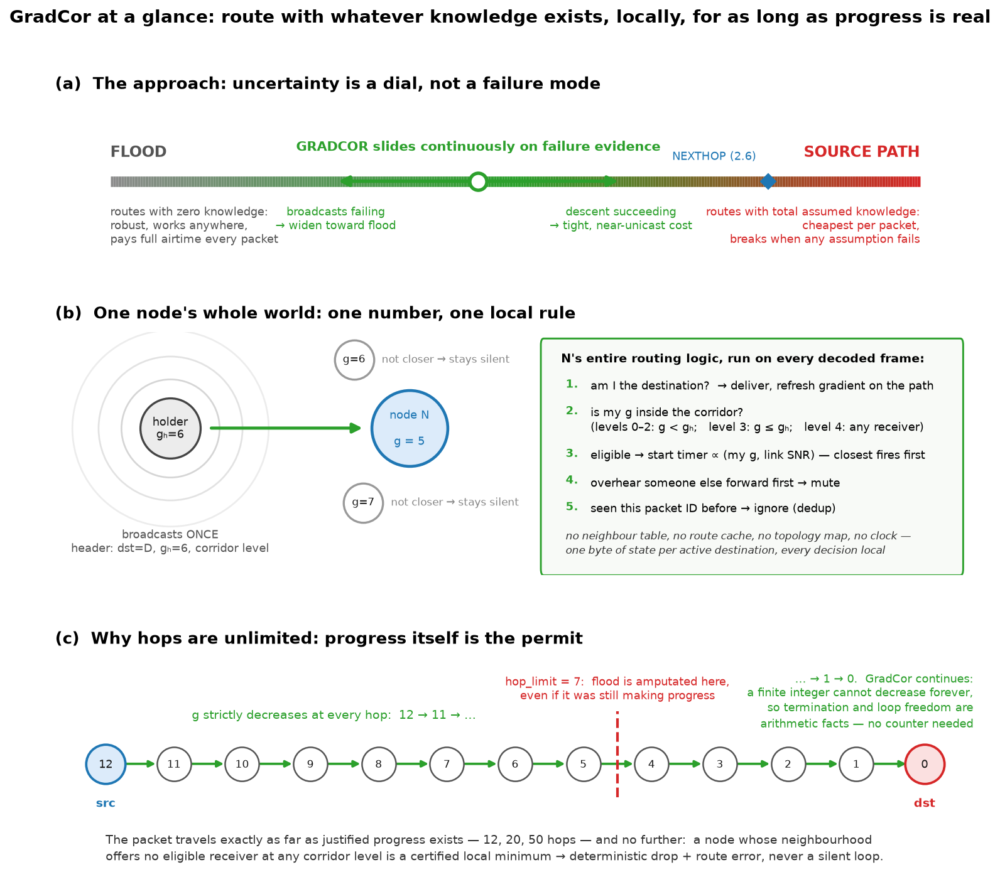
Each node keeps, per active destination only, a single pair: the estimated hop distance to that destination (the gradient, g) and, in v1, the age of that estimate. Nothing else — no next-hop pointer, no path, no per-neighbour table. This is deliberate: a next-hop pointer names one specific relay and fails when that relay sleeps; a gradient only claims “I am about N hops away,” a far weaker statement that many different neighbours can satisfy. Weak claims rot slower than strong ones. Forwarding is also independent of the node database: a relay never identifies, addresses, or decrypts for the destination — it only compares its own g against the g in the packet header — so a relay can carry traffic toward destinations it has never heard of as nodes and routing state grows with the node's active conversations, not with mesh size. Only the sending endpoint needs the destination's identity (to address the packet and encrypt), exactly as it does today.
| Field | Type | Meaning | Fate in final spec |
|---|---|---|---|
| g | uint8 | estimated hops from this node to the destination | kept — the entire routing state |
| age | uint8 (hours) | time since g was planted or last refreshed | removed by the §3.6 ablation; optional replant hint only |
On the wire, a data packet carries the destination, the normal packet ID (reused for duplicate suppression), the holder's own gradient gh and a 2-bit corridor level. That is 1–2 bytes of overhead — against a source route's full node list, this is the difference between constant and linear per-packet cost in path length.
Gradients are created by a single flood from the destination (or equivalently, by the reverse view of any flood the destination originates — in Meshtastic practice, a NodeInfo, position, or ordinary channel-message broadcast can double as a planting flood at zero extra cost). There is no dedicated announce packet type and no transmission the mesh would not otherwise carry: planting is a side effect of whatever the destination already sends. Every node the flood reaches records the hop count at which it first heard it: that is the gradient, age zero. One broadcast per node, once, amortised over every subsequent packet toward that destination. There is no periodic beaconing; the protocol never spends airtime maintaining state it is not using. Nor does a gradient-less source need to solicit a plant: it can managed-flood the packet exactly as Meshtastic does today and if that flood delivers, the refresh of §3.5 plants the gradient along the proven path for every packet after it — the replay's on-demand planting shortcut and this deployable cold start are compared quantitatively in §8. Figure 2 traces the two numbers through their whole life: stamped by the planting wave (a), sitting as a two-byte table row (b) and re-stamped for free whenever a delivery proves what the true working distance is (c).
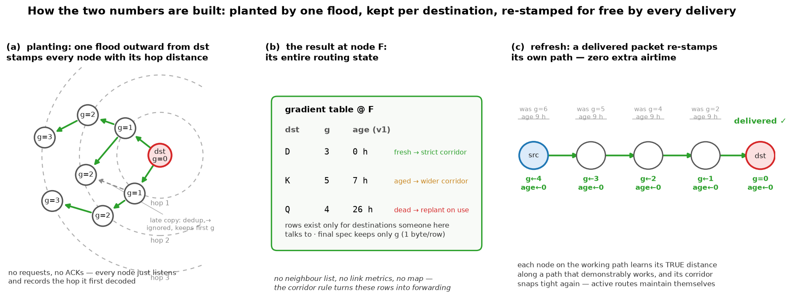
One honest subtlety: the planting flood travels outward from the destination, while data flows toward it — and §4 shows 43% of real links have no observed reverse. The gradient is therefore a distance estimate measured partly over links the data cannot use in reverse: g can underestimate the true forward distance and a strictly-descending chain from g=4 can never be longer than five nodes. GradCor survives this for two reasons. First, forwarding is anycast — it never needs the specific reverse of any planting hop, only some decoded receiver with a lower g. Second, the corridor widens per hop, not only with age: a holder that finds no strictly-closer receiver retries, then admits equal-g receivers, then any receiver (Algorithm 1), so an optimistic gradient degrades into guided exploration rather than failure — and the moment one packet gets through, the delivery refresh (§3.5) re-stamps every node on the working path with its true forward-path distance, converting the exploration cost into a one-time fee per gradient lifetime. In the Norway replay this is measurable: 22.8% of gradient-guided deliveries took more hops than the sender's g promised (median one extra, maximum +19) and when g strictly underestimated the true reachable distance, packets still got through at a degraded rate (16% vs 64% baseline) at roughly 6× the airtime — degraded, not dead and self-correcting on first success. The evaluation in §5–6 replays this asymmetry faithfully rather than assuming it away.
The holder of a packet does not pick a next hop. It broadcasts once and eligibility is decided at the receivers: every node that decodes the frame compares its own gradient with the gh in the header. Eligible receivers start a contention timer proportional to their gradient (ties broken by link quality); the timer that fires first forwards the packet and the other candidates hear that forward and suppress themselves. One clarification to carry through the rest of the paper: this contention timer is a one-shot, milliseconds-scale MAC backoff armed by a packet reception — a race resolver, not a clock. It is unrelated to the hours-scale state-aging clocks that §3.6 later removes and it is intrinsic to anycast: some tie-breaker must decide which eligible receiver goes first. This is the ExOR trick[2], and it is what converts LoRa's broadcast medium from a liability into the protocol's main asset: one transmission simultaneously probes every potential relay, so the packet advances if any of them is awake and heard it — where unicast schemes stall if the named one didn't.
Two mechanics deserve spelling out, because both differ from the hop-count intuition a reader may carry in. First, gh is not a TTL: no one decrements it. Each forwarder overwrites the field with its own stored gradient before rebroadcasting, so the header always reads “the current holder believes it is N hops away.” Under the strict rule the value falls at every hop — which is what provides the termination a TTL normally buys — but it falls because each node stamps its own better knowledge, can snap downward mid-flight when the packet reaches a node with a shortcut and (in the widened corridors) may hold or rise where a countdown would already have killed the packet. Second, the winner's forward transmission is itself the per-hop acknowledgment: the holder overhears it and goes quiet — the same passive-ack-by-rebroadcast the managed flood uses today, so no explicit ACK packet exists at any hop. Silence within the contention window is therefore the holder's failure signal and it is exactly what arms the escalation of §3.4: hear nothing, retry; still nothing, widen the corridor and broadcast again. Figure 3(d) traces one complete race on the time axis.
send(src, dst): if no gradient for dst at src or age ≥ AGE_DEAD (24 h): plant(dst) # one flood from dst; abort if src unreached holder ← src; visited ← {src} loop: for level in 0..4: # at most 5 broadcasts per hop corridor ← STRICT if level ≤ 2 and age < AGE_WIDEN (3 h) EQUAL if age ≥ AGE_WIDEN or level = 3 ANY if level = 4 broadcast(pkt, g_holder, corridor) # one airtime unit # at each receiver v ∉ visited that decoded the frame: if v = dst: deliver; refresh gradient along path; return eligible(v) ↔ g(v) < g_holder (STRICT) | g(v) ≤ g_holder (EQUAL) | v decoded the frame (ANY) if any eligible: winner ← contention race (min g, then best SNR); break # losers mute on overhearing the winner — its forward # is the holder's implicit ack (Figure 3d) if no winner: drop deterministically # local minimum; RERR toward src (§3.5) visited ← visited ∪ {winner}; holder ← winner
visited set is not carried in the packet: Meshtastic's existing packet-ID duplicate
suppression plays the same role, since a node that already forwarded a packet ignores it
thereafter. Note the key is forwarded, not seen: a contention loser that muted
(Figure 3d) never transmitted and must stay eligible for later broadcasts of the same
packet — §3.7 explains why this distinction carries real recovery value.The corridor rule is the novel piece and the reason the protocol has no cliff-edge failure mode (Figure 3). While the gradient is fresh (<3 h), only strictly-lower-gradient receivers may forward: the packet monotonically descends toward the destination at near-unicast cost and the strict decrease on a finite integer proves both loop freedom and termination without any hop-limit counter. As the gradient ages past 3 h — knowledge now suspect — equal-gradient receivers are admitted, buying lateral moves around a sleeping relay or a newly-dead link at modest extra cost. If even that fails, or the gradient is very old, any receiver qualifies: the packet is now effectively flooding, which is exactly the right behaviour when the node knows nothing — and it is reached gradually, hop by hop, not by a mode switch that must itself be signalled. The widening is strictly local: the source never decides to “send as flood,” and a corridor opened to ANY at one troubled hop does not stay open — the next holder starts again at STRICT, so the packet re-tightens the moment it is past the gap. Uncertainty in GradCor is not an error state; it is a dial that trades airtime for reach in proportion to how much the state deserves to be trusted. Note that v1 drives this dial with two triggers — wall-clock age and per-hop failure escalation — which are redundant with each other; §3.6 shows the per-hop trigger alone carries the whole effect on the real network and the final specification keeps only it.
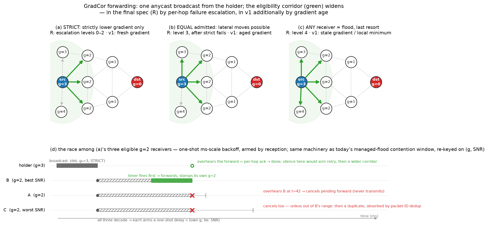
Delivery is itself the maintenance protocol. When a packet reaches the destination, every node on the path it took is stamped with its true distance-to-destination along that working path, age zero (Figure 2c; in firmware this rides the existing delivery ACK). Active conversations therefore keep their own gradients fresh for free and the corridor stays tight exactly where traffic flows — the state/freshness trade-off (§1) is paid only for destinations nobody is talking to. One asymmetry consequence is worth naming: the confirmation travels its own reverse path, which on an asymmetric mesh need not retrace the data's forward path — forward-path nodes out of earshot of the return leg simply miss that refresh. The miss is benign by construction: a node that misses a refresh merely keeps a staler g — there is no named next hop to be wrong about — and the cost is a little extra escalation on a later packet, precisely the failure the §3.3/§3.4 ladder absorbs (the replay's idealization of this refresh is disclosed in §8, item 6). A gradient that reaches 24 h without a refresh is declared dead and the next send replants it; Figure 4 summarises the states.
In the final specification the lifecycle therefore simplifies as the lower band of Figure 4 shows: the delivery refresh survives unchanged, the FRESH/AGED/DEAD clock states disappear because eligibility no longer consults age and replanting degenerates to “plant if you have no gradient at all” (an optional coarse timer may evict rows that have not been refreshed for days, purely as memory hygiene).
The drop rule completes the lifecycle. A packet whose holder finds no eligible receiver at any corridor level is at a locally-verified dead end: across the whole escalation ladder — strict, equal, any — no un-visited receiver decoded the packet at all. It drops the packet there, deterministically and can report a route error back toward the source (the RERR is specified but not exercised in §6's evaluation). Contrast both alternatives: a hop-limit expiry drops at an arbitrary distance-driven point regardless of progress and a stale unicast route black-holes silently. GradCor's failure is localised, observable and actionable — the property the original design brief demanded when it argued for removing the hop-limit counter, with the packet's lifetime bounded instead by the visited-set/dedup rule and the finite gradient descent.
Two constants in the specification look like magic numbers: widen at 3 hours, replant at 24.
A fair objection is that these are statically chosen and the soft-state literature suggests
the “right” staleness timer should track the measured hazard rate of state
invalidation — the reasoning behind RPL's Trickle timer[6], which resets on
observed inconsistency rather than on a schedule. We therefore ablated the clocks on the
Norway replay (experiment_widening.py; Figure 5).
Three findings. First, staleness is real: delivery through a 1–2-hour-old gradient runs at 70%, decaying smoothly to 17% at 13–23 hours with airtime cost rising in step (Figure 5a) — a genuine hazard process with no cliff at any particular hour, so no specific threshold is “correct.” Second, the wall-clock threshold barely matters: sweeping the widening age from 0 (always widened) to never-widen moves delivery only between 47.2% and 50.6% (Figure 5b). Third, the clock is redundant: a variant that removes wall-clock age from the eligibility rule entirely — per-hop escalation only, strict → equal → any — delivers 50.9% vs the 49.7% baseline over 10 seeds, at equal cost; even deleting the replant timer too leaves it at 50.9%. The explanation is that a failed anycast broadcast is a direct, local measurement of the exact staleness the clock tries to predict: the age threshold decides in advance what the next three transmissions will discover anyway. Following the same Trickle logic, reacting to the inconsistency beats scheduling it — and the “two numbers” of §3.1 reduce to one (age survives only as an optional, insensitive replant hint). We also tested one adaptive variant in the opposite direction — a learned per-destination starting level that skips strict attempts a previous packet did not need — and it is worse (43.1%): skipping the cheap strict probes forfeits their frequent wins. The simple deterministic rule survives its own ablation; the statistical refinement does not.
This yields the final specification — what the design evolved to. It is Algorithm 1 with every age test deleted, nothing more:
# GradCor-R (final specification): Algorithm 1 with the clocks removed. # State per active destination: g only (one byte + key). No aging tick. send(src, dst): if src has no gradient for dst: plant(dst) # one flood; the only replant rule loop over holders as in Algorithm 1: for level in 0..4: corridor ← STRICT (g < g_holder) if level ≤ 2 EQUAL (g ≤ g_holder) if level = 3 ANY if level = 4 broadcast; receivers race exactly as before; delivery refreshes g along the path if no winner: drop deterministically + RERR # unchanged
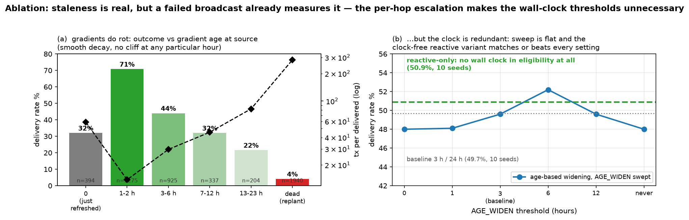
Each ingredient is individually proven: monotone-metric descent is Babel's feasibility condition[3] and RPL's rank rule[4]; receiver-side anycast with contention timers is ExOR[2]; destination-rooted gradients go back to directed diffusion in sensor networks. The composition is what is new: coupling eligibility width to the protocol's own evidence of staleness — wall-clock age in v1, per-hop failure escalation in the final spec — so the protocol occupies the whole flood↔unicast spectrum continuously instead of switching between brittle modes and refreshing its state opportunistically from delivered traffic instead of periodic control packets.
A Meshtastic port is less invasive than it may sound. The firmware's router hierarchy
(src/mesh/FloodingRouter → NextHopRouter) already contains the
two hard primitives: packet-ID duplicate suppression (the visited set) and an SNR-weighted
rebroadcast contention window (RadioInterface::getTxDelayMsecWeighted) — the
managed flood already makes far nodes rebroadcast first; GradCor re-keys that same timer on
(gradient, SNR). The gradient table is a small addition to per-node state alongside the
NodeDB, planting piggybacks on floods that already happen (NodeInfo, position) and the
corridor level fits in spare header bits. Porting GradCor-R rather than v1 removes every
scheduled timing element: no per-entry aging tick, no periodic timer, no state clock. The
one timer that remains is the contention backoff of §3.3 — one-shot, milliseconds
scale, armed only by a reception — and the firmware already ships its exact skeleton:
getTxDelayMsecWeighted maps the received SNR to a contention-window size
(−20…10 dB → CWmin…CWmax), gives
ROUTER-role nodes an early window and picks a random slot inside it. GradCor-R re-keys the
slot choice on (gradient, SNR) instead of SNR alone; no new timing machinery is introduced.
The genuinely open engineering risk is contention-race correctness when several eligible
receivers sit inside mutual capture range — duplicate forwards cost airtime but are
absorbed by dedup; missed suppression is the case to instrument first (§8, item 5).
One dedup semantic needs deliberate care in the port. Meshtastic's
wasSeenRecently drops a packet the node has seen; GradCor's visited-set
equivalent must drop only what the node has forwarded. The difference is the protocol's
self-recovery path: a contention loser that muted (§3.3) has seen the packet but never
carried it — if the winner's branch dead-ends a few hops later and a widened-corridor
broadcast reaches that loser again, it must be allowed to pick the packet up. Under seen-keyed
dedup every raced-and-lost candidate is permanently consumed and a packet that commits to a
failing branch cannot wander back to the branch that would have worked; under forwarded-keyed
dedup only the actual chain of forwarders is burned. The replay models forwarded-keyed dedup
throughout and its recovery behaviour is visible in the data — 22.8% of gradient-guided
deliveries took more hops than the sender's gradient promised (§3.2), i.e. walks that
detoured and still arrived. A seen-keyed port would silently forfeit exactly those deliveries;
the change is one predicate, but it belongs on the firmware-prototype checklist next to the
contention race.
All inputs were extracted from RelayMesh production systems for network “norway” (a public community network) over 2026-06-27 → 07-04:
| Source | Content | Volume |
|---|---|---|
| Memgraph (topology graph) | :Node rows of the 7-day build window (roles, GPS; its pre-fix :HEARD edges were not used — see below) | 499 nodes, 3,613 edges |
ClickHouse messages | raw TRACEROUTE_APP packets (fwd path, route_back, per-link SNR) | 18,919 packets |
ClickHouse node_activity_5min | per-node hourly message counts (presence) | 326 active nodes |
Extracting links from traceroutes requires one correctness step the production topology builder
missed at the time of this study: 31% of stored TRACEROUTE_APP rows are responses, not
requests. A response is a new packet whose envelope source and destination are swapped while
route[] still lists the relayers in requester→responder order; parsing it as a
request creates reversed edges and parsing mid-flight rows as complete paths invents endpoint
hops that never happened. The corrected extraction — developed alongside this paper and
since shipped to RelayMesh production — classifies each row by payload shape
and hop accounting, orients both legs correctly and appends endpoints only on arrival
evidence. The effect is large: the naive parse yields 4,249 directed links, the
corrected one 1,423 — and measured link reciprocity rises from 36% to 57%,
i.e. much of the apparent asymmetry in the production graph is an extraction artifact, though
43% of real links still have no observed reverse. Return legs (route_back),
previously discarded in production, contribute 303 links (~21%) seen in no other way. Role distribution:
141 CLIENT, 66 CLIENT_MUTE, 55 CLIENT_BASE, 24 ROUTER, 6 ROUTER_LATE, 1 TRACKER, 206 unset. The
largest weakly connected component covers 200 nodes, the largest strongly connected component
125 and the graph is hub-dominated: the busiest routers (degree 53–107) anchor the
geographic clusters.
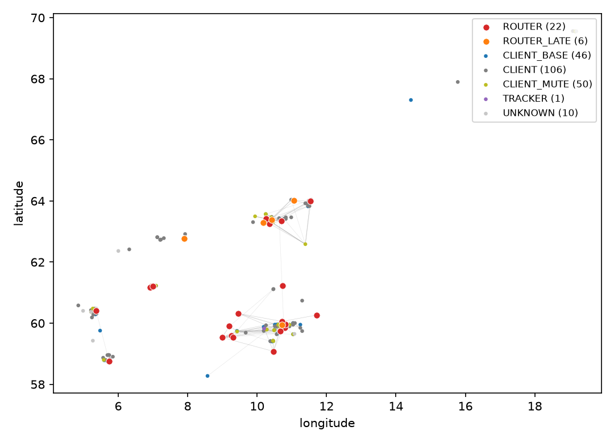
The study is a trace-driven replay: rather than inventing a radio environment, we reconstruct the network the production pipeline actually observed — which links existed, how good they were and when each node was awake — and then run all five forwarding protocols (the four strategies of §2, with GradCor in both its v1 and final form) over that reconstruction, hour by hour, for the same week the data describes. Figure 7 shows the pipeline end to end; the subsections below walk through each stage.
Meshtastic's traceroute is the only mechanism in the production data that reveals individual
RF hops. A traceroute request floods toward its destination; every node that relays it
appends itself to the packet's route[] array and records the SNR at which it heard
the previous hop in snr_towards[]. The responder then emits a new packet
— envelope source and destination swapped, route[] copied unchanged, its own
return relayers accumulating in route_back[]/snr_back[]. The true
forward path of the probe is therefore [requester] + route + [responder] and every
consecutive pair in that sequence is one real, directed, SNR-annotated radio reception
(Figure 8). Three correctness rules matter (each was validated against the raw data):
responses are detected by payload shape and hop accounting and their legs oriented
requester→responder regardless of envelope direction; endpoints are appended only when the
SNR array proves the leg actually arrived (mid-flight copies heard by a gateway must not invent
the final hop); and duplicates, broadcast and placeholder IDs are dropped. The response
heuristic is needed because the canonical discriminator — the protobuf
request_id — is absent from encrypted rows (~98% of traffic); on the recent
unencrypted rows where it is present, the heuristic matches the canonical label on
98.7% of 871 ground-truth responses.
[requester]+route+[responder], whose consecutive pairs are
real SNR-annotated receptions. Dashed red: the return leg from route_back, which
travels different links when the mesh is asymmetric. Parsing both legs of all 18,919 rows with
correct response orientation yields 1,423 distinct directed links; the return legs alone
contribute 303 (~21%) that the pre-fix production builder discarded.Aggregating across all packets, each directed link (u→v) accumulates an observation count and a mean SNR. Direction is radio direction: u transmitted, v decoded. This graph is deliberately not symmetrized — asymmetry is a finding, not noise (§4).
The trace tells us a link existed; a simulation additionally needs the probability that a single transmission on it succeeds. We model this with two multiplicative factors (Figure 9):
p(u→v) = w · [ pmin + (pmax − pmin) / (1 + e−(SNR − x₀)/4) ],
w = obs / (obs + k)
The bracket is a logistic packet-success curve in the link's mean measured SNR (raw
snr_towards divided by 4 to approximate dB): strong links approach
pmax, weak ones fall toward pmin. The evidence weight w
encodes a different fact: a link observed once in seven days — a ducting event, a moment
of antenna alignment — is not a dependable link, however good its single SNR sample
looked, while one observed hundreds of times is infrastructure. Without this term the simulator
treats every fleeting link as permanently available and over-delivers dramatically at short hop
counts.
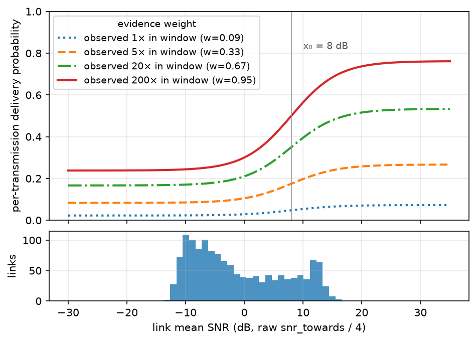
Because reverse directions could be under-observed, the model includes an optional prior: an
unobserved reverse link (v→u) may be granted rev_p · p(u→v)
rather than zero, with rev_p calibrated rather than assumed. As §5.3 shows, the calibration
drove rev_p to zero — once response rows are oriented correctly, the observed round-trip
rate is already explained without inventing reverse links.
The model has five free parameters (x₀, pmax, pmin, k, rev_p). None are hand-picked: all were grid-searched to jointly minimise the distance to two statistics the trace itself provides.
route_back,
i.e. completed the round trip. Simulated forward-then-reverse floods between the same pairs must
approximate this rate. This anchors reverse-link generosity — exactly the quantity PATH's
viability depends on.
Best fit: x₀ = 8 dB, pmax = 0.8,
pmin = 0.25, k = 10, rev_p = 0. Both anchors now fit
well (Figure 10; round trip 0.31 simulated vs 0.23 real). One denominator caveat: the two
round-trip rates are not the same statistic — the real 23% is the share of all observed
traceroute rows carrying a route_back, while the simulated 31% is the fraction of
delivered forward floods whose reverse flood also delivered — so this anchor is
directional rather than exact. Under either reading the simulator treats reverse paths at least
as generously as the trace shows, the direction that can only flatter PATH (§8, item 1).
Notably the grid chose
rev_p = 0 — with correctly-oriented links, the data is best explained by
unobserved reverse directions simply not existing, so asymmetry is fully binding in the
replay. The small remaining round-trip optimism can only overstate PATH (§8).
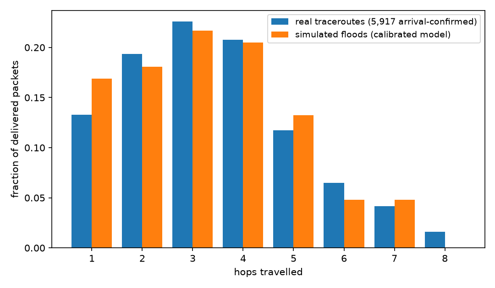
The synthetic study modelled churn as random node movement. The production data says the real phenomenon is duty cycling: the median Norwegian node was online 22 of 168 hours and the 90th percentile 167. We therefore give every node a set of online hours — the union of its hourly activity buckets and its appearances inside any traceroute path, with gaps of ≤3 hours filled (a node relaying at 09:00 and 11:00 was almost certainly on at 10:00). A node that is offline in a given hour cannot receive, relay, or originate. This is a stronger and more honest stressor than mobility: state rots not because topology changed shape but because the node holding the route simply went to sleep.
All five protocols run over the identical world model; none is given information the others lack. Table 2 lists the fixed parameters. FLOOD and the discovery/fallback floods inside the other four protocols share one implementation, including a first-order MAC model: when several copies of a packet arrive at one receiver in the same flood round they collide and the strongest frame survives with capture probability 0.8 (otherwise all are lost). CLIENT_MUTE nodes never rebroadcast in any protocol.
| Parameter | Value | Applies to |
|---|---|---|
| Hop limit | 7 | all floods |
| Per-hop unicast retries | 3 | PATH, NEXTHOP |
| Extra strict-corridor broadcast tries | 2 | GRADCOR v1 & R |
| Corridor widens at gradient age | 3 h | GRADCOR v1 only |
| Gradient replanted at age | 24 h | GRADCOR v1 only |
| Collision capture probability | 0.8 | all floods |
| Safety cap, transmissions per packet | 2,000 | all protocols |
sim_norway.py).
The hop limit is set to Meshtastic's protocol ceiling of 7 rather than the shipped default of 3
— a choice that favours FLOOD, PATH and NEXTHOP, whose reach it bounds. Planting floods
obey the same limit, so the replay never exercises gradient descent beyond 7 hops: the
unlimited-hop property of §3 is a spec-level guarantee, not something this evaluation
stresses. The limit's value matters asymmetrically for GradCor's internal floods
(experiment_hoplimit_flood.py): raising it to unlimited gains almost nothing
(50.9 → 51.3% and an unlimited flood costs only ~9% more transmissions than
hop-7, since dedup already bounds it), but lowering it to the shipped default of 3 starves
planting reach and costs 13 delivery points (50.9 → 37.9%).PATH discovers a route with one flood, returns the recorded path hop-by-hop over the reverse links (the discovery fails if the reply dies), then source-routes data strictly along the path with 3 tries per hop; a broken hop invalidates the route and permits one rediscovery per packet. NEXTHOP keeps, at every node, the relay that last delivered a packet toward each destination — learned free of charge from the parent chain of any successful flood — and chains down these caches, falling back to a flood (which re-teaches caches) on any miss or per-hop failure. GRADCOR v1 implements Algorithm 1 exactly as specified in §3, with gradient ages advancing once per simulated hour (the upper band of Figure 4); GRADCOR-R implements Algorithm 2, the clock-free final specification. Both run in parallel in the head-to-head so the evolution claim of §3.6 is tested in the same arena as the competing protocols, not only in isolation. For both, the contention race is resolved ideally (lowest gradient always wins, suppression never fails) — a simplification whose consequences are discussed in §8. A second GradCor-specific shortcut also needs flagging: a source with no gradient triggers the planting flood from the destination at that instant, charged to the triggering packet. Causally, nothing in a deployment tells a destination to flood on demand; the deployable cold-start paths are seeding by the destination's ordinary periodic broadcasts and the flood-the-packet fallback of §3.2. §8, item 7 replaces the shortcut with both deployable forms and measures the difference.
Traffic replays the real demand pattern: 30 (source, destination) pairs sampled from the actual traceroute pair-frequency distribution (weighted, without replacement), restricted to endpoints online ≥20 hours in the week so conversations can exist at all. Each pair sends one packet per hour, but only in hours where both endpoints were genuinely online — a message to a sleeping node is not a routing failure and must not be scored as one. Ten seeds give ≈30,000 packet attempts per protocol. Every broadcast or unicast attempt costs one transmission; gradient-planting, discovery and fallback floods are charged to the packet that triggered them, so no protocol externalises its control traffic. We report delivery rate, transmissions per packet sent (offered-load cost) and transmissions per packet delivered (the airtime price of a success — the currency that matters, per §1).
| Protocol | Delivery % | Tx / packet sent | Tx / packet delivered |
|---|---|---|---|
| FLOOD (hop limit 7) | 25.3 | 17.9 | 71.0 |
| PATH (stylized source routing, §2) | 4.0 | 18.9 | 473.2 |
| NEXTHOP (2.6-style cache) | 30.4 | 18.2 | 59.9 |
| GRADCOR v1 (age-widened corridor) | 48.6 | 10.4 | 21.4 |
| GRADCOR-R (final spec, no clocks) | 50.7 | 10.8 | 21.3 |
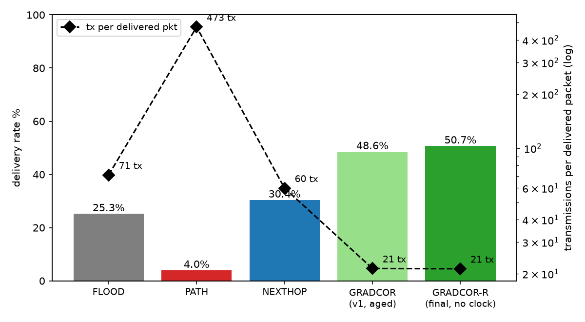
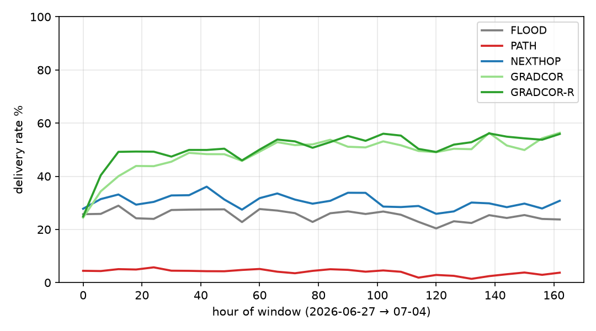
A single network, however real, is one draw from the space of mesh topologies. To test whether the result is a property of the protocol or a property of Norway, we ran the identical harness on the five other production networks with the most traceroute traffic in the same week: Bay Area Mesh (3,637 nodes), Florida Mesh, SoCal Mesh, Meshtastic Portugal and Meshtastic Italia. Everything was recomputed from scratch per network — link graph, presence, roles and crucially the link-model calibration, re-fitted against each network's own hop-count distribution and round-trip completion rate (the fitted parameters genuinely differ: x₀ ranges 0–12 dB and the reverse-link prior stays at zero everywhere except Florida and SoCal). Reusing Norway's constants elsewhere would have been methodologically wrong; nothing about the protocols themselves was changed or tuned.
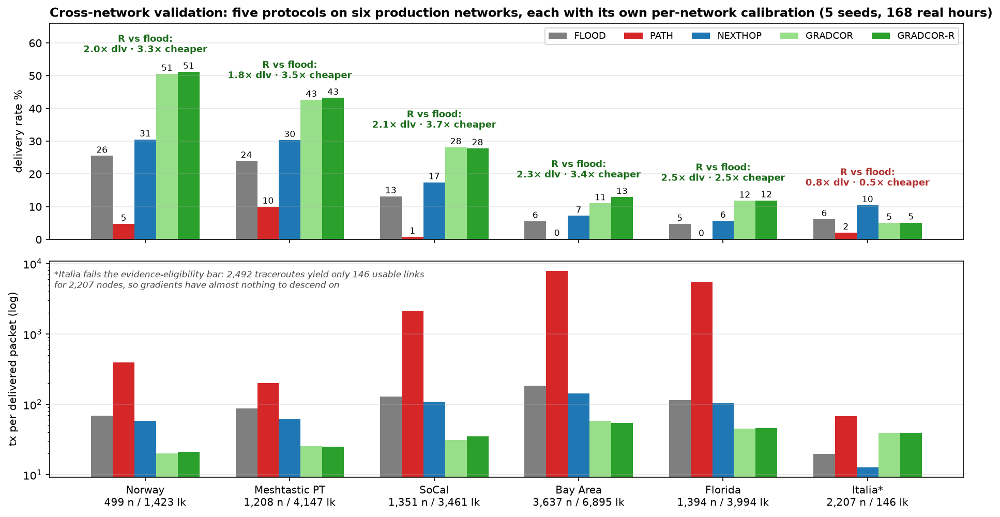
| Network | Nodes | Links | Recip % | FLOOD % | GRADCOR-R % | R vs flood | R tx/dlv |
|---|---|---|---|---|---|---|---|
| Norway | 499 | 1,423 | 57 | 25.5 | 51.2 | 2.0× @ 3.3× cheaper | 21.3 |
| Meshtastic PT | 1,208 | 4,147 | 36 | 24.0 | 43.2 | 1.8× @ 3.5× cheaper | 25.1 |
| SoCal Mesh | 1,351 | 3,461 | 31 | 13.2 | 27.8 | 2.1× @ 3.7× cheaper | 35.2 |
| Bay Area Mesh | 3,637 | 6,895 | 32 | 5.6 | 12.9 | 2.3× @ 3.4× cheaper | 54.3 |
| Florida Mesh | 1,394 | 3,994 | 37 | 4.7 | 11.9 | 2.5× @ 2.5× cheaper | 46.1 |
| Meshtastic Italia | 2,207 | 146 | 30 | 6.2 | 5.1 | 0.8× — below eligibility bar | 39.9 |
multinet_results.csv). Norway's row is its 5-seed re-run within
this harness, hence the small differences from Table 3's 10-seed values — a useful
incidental read on seed noise (≈±0.5 points). Absolute delivery scales with
evidence density — the dense US networks have far more nodes per usable link, so every
protocol delivers less there — but the ratios hold. Italia's row is the operative
precondition, not a counterexample: gradient routing needs enough traceroute-derived link
evidence to plant gradients on — exactly the evidence the extraction fixes of §7
(now shipped) increase.Two observations deserve emphasis. First, the ranking and the ratios — the two things §8 argues are the trustworthy outputs of this methodology — survive a 7× range in network size, a 30–57% range in link reciprocity and independently fitted link models; the Norway result is not a topology accident. Second, the one failure is diagnostic rather than embarrassing: where traceroute evidence is too thin to define gradients (Italia, 0.07 links per node), GradCor degrades to roughly flood performance instead of below it — the graceful-degradation property doing exactly what it was designed to do at the extreme — while the evidence-free NEXTHOP cache takes the lead. Evidence density is thus a measurable eligibility criterion for deploying gradient routing on a given mesh.
A natural next question is how far delivery could be pushed — say, to 99%. The replay can
answer this honestly because it can first measure what no algorithm can exceed: the fraction of
attempts for which a forward path over online, relay-capable nodes exists at all. On the
Norway world that instant-reachability ceiling is 93.2% and patience barely moves it: a
packet held and retried for up to 24 hours can reach at most 95.6% of attempts, because
4.4% of them never see a forward path in the entire week
(experiment_target99.py, experiment_custody.py; 10 seeds). 99%
absolute delivery is therefore not a protocol problem on this network — it is
unreachable by any routing scheme whatsoever — and the meaningful question becomes
distance to the ceiling.
That distance can be closed almost entirely with three additions, each a single rule that leaves the one-byte state and the forwarding walk untouched (Figure 14a). First, the fallback-flood cold start already measured in §8, item 7 (+4 points). Second, a rescue flood at the local minimum: instead of the deterministic drop, the stuck holder floods the packet from where it stands (+5 points) — philosophically consistent, since the drop point is by construction the node that has just proven, across the whole escalation ladder, that its knowledge is exhausted and a flood from there is the narrowest flood that can still help. Third — the single biggest lever — end-to-end retries: re-sending the packet up to k times on failure lifts delivery to 75.3% (k=1), 84.9% (k=3) and 88.0% (k=5), i.e. 94.4% of everything reachable. Each retry draws fresh channel outcomes and benefits from whatever gradients the failed attempts refreshed; the machinery is not hypothetical — Meshtastic's reliable-delivery layer already retransmits unacknowledged DMs today and the headline evaluation deliberately granted no protocol this help (§8, item 8). Finally, custody — holding a failed packet and retrying hourly for up to 24 h, the one genuinely new architectural element (a store-and-forward queue with expiry) — reaches 94.5%: 98.9% of the temporal ceiling. The anatomy of what still fails at k=5 confirms the diagnosis (Figure 14b): 56.6% of remaining failures are physically unreachable that hour, versus 23.9% mid-walk losses and 19.5% failed cold starts.
The price is stated just as plainly: transmissions per delivered packet rise from 21.5 (published spec) to 42.7 at k=5 and 79.7 with custody — at the extreme, airtime per delivered packet returns to flood's level (71) while delivering 3.7× more. The efficient knee is k=3–5 without custody: 85–88% delivery at 38–43 tx per delivered packet, still well ahead of flood on both axes simultaneously. Three caveats bound the claim: the replay's independent per-transmission link draws flatter retries relative to real correlated fading (§8, item 8); no duty-cycle budget is modelled and 38–75 transmissions of offered load per packet may be regionally infeasible; and custody changes the application contract (deliveries arriving hours late). The structural conclusion survives all three: simple reliability envelopes take GradCor essentially to the network's own ceiling, and the ceiling itself — the last five to seven points — is an operations problem, router coverage and evidence density, the same deployment precondition §6.1's evidence-starved network surfaced.
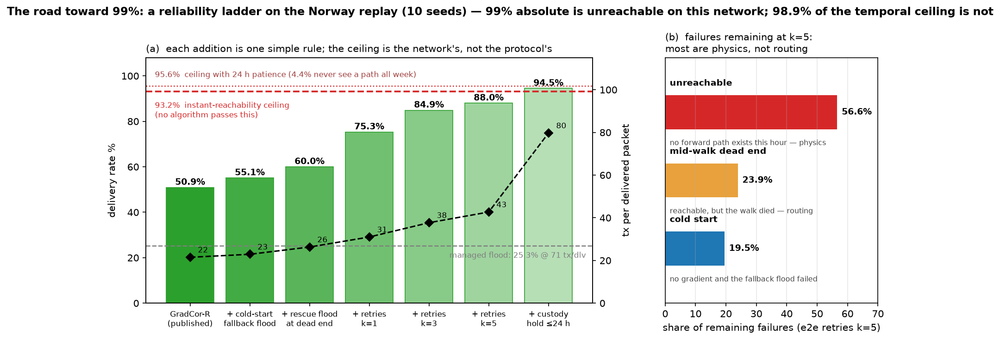
GradCor removes the hop limit only where strict descent certifies progress — unicast. The
majority of a mesh's load (positions, telemetry, NodeInfo, channel texts) is broadcast and
keeps managed flooding (§8, item 9), so a fair question is whether that traffic
could shed its hop limit too. Structurally it can, safely: duplicate suppression, not the
counter, is what terminates a flood — every node relays a given packet at most once, so
an unlimited flood is bounded by mesh size. Whether it is worth anything is an
empirical question and the answer across all six networks is: almost nothing
(experiment_hoplimit_multinet.py, Table 5). Raising the limit from 7 to
unlimited adds at most 2.2 points of reachable-node coverage (Norway) for 11–25% more
transmissions; on four of the six networks the gain is under one point. The limit does still
bind at 7 — on 8–38% of floods the frontier is alive when the counter cuts
it — but that surviving frontier is so attenuated by per-link loss that letting it run
adds little. Floods die of link loss, not of the counter.
The consequential knob sits at the other end: Meshtastic's shipped default of 3. On every network with usable link evidence, hop limit 3 forfeits between a third and two thirds of the flood coverage that limit 7 achieves (Norway 20.8% → 32.2% of reachable nodes, SoCal 4.3% → 12.8%, Portugal 6.3% → 15.2%) — and it starves GradCor's planting floods (Table 2: −13 delivery points). For broadcast, then, hop-limit removal is safe but immaterial, while raising the default toward the protocol ceiling of 7 is the change that matters — both for classic flood reach and as the planting substrate gradient routing stands on.
| Network | Reachable covered, hl 3 | hl 7 | unlimited | Tx/flood 3 → 7 → unlim | Limit binds at 7 |
|---|---|---|---|---|---|
| Norway | 20.8% | 32.2% | 34.4% | 6.5 → 16.3 → 18.1 | 22% |
| Meshtastic PT | 6.3% | 15.2% | 15.8% | 5.6 → 22.4 → 25.3 | 38% |
| SoCal Mesh | 4.3% | 12.8% | 14.2% | 4.3 → 21.0 → 26.3 | 37% |
| Bay Area Mesh | 2.2% | 4.8% | 4.9% | 3.9 → 12.9 → 14.3 | 17% |
| Florida Mesh | 1.1% | 1.9% | 2.0% | 2.9 → 6.1 → 6.8 | 8% |
| Meshtastic Italia | 30.3% | 30.3% | 30.3% | 1.2 → 1.2 → 1.2 | 0% |
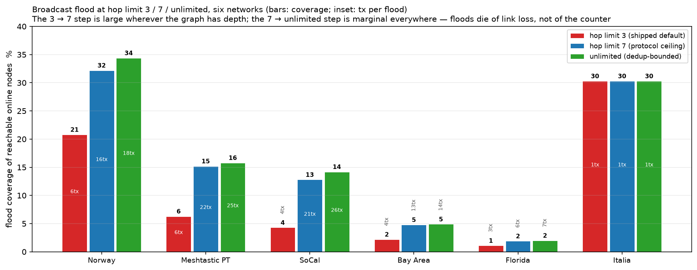
If not the hop limit, can broadcast reach be bought at all? Only with redundancy: the flood's
one structural deficit is that every link gets a single transmission trial, so every
remedy is some placement of retransmissions — and the pricing is roughly linear
(Table 6; experiment_broadcast.py, Norway, 900 floods).
| Variant | Rule | Covers reachable | Tx/flood | Verdict |
|---|---|---|---|---|
| Baseline | one tx per relay | 32% | 16 | reference |
| ROUTER ×2 | backbone relays send twice | 41% | 25 | best coverage per tx; one firmware predicate |
| SRC ×2 | source resends (new packet ID) | 48% | 33 | no firmware change; for broadcasts that matter |
| ECHO | relay retransmits only on hearing no onward echo | 46% | 35 | adaptive rule loses to dumb resend — see below |
| RELAY ×2 | every relay sends twice | 57% | 58 | max reach, worst efficiency; invites collisions |
The ECHO row is the recorded negative result: redundancy targeted at coverage frontiers — GradCor's silence-arms-retry applied to flooding — does not beat resending from the source. Without a destination there is no direction to be smart about and in a loss-dominated mesh nearly every relay is a frontier, so the targeted rule degenerates into blanket retransmission with bookkeeping. Of GradCor's three assets — persistence, steering, concentration — only persistence transfers to one-to-all traffic; steering is undefined and concentration (suppression) trades reach for airtime (§8, item 4). Managed flood is, in this precise sense, already the broadcast-optimal form of the same machinery.
To make sure this is not an artifact of the particular variants we picked, we swept the
strategy space systematically, starting from the objective rather than from any protocol:
deliver one message to every reachable node, at minimum airtime. Every known scheme
decomposes into three orthogonal variables — who relays (all relay-capable nodes,
as Meshtastic does; or dedicated infrastructure only, as MeshCore does — its clients
never relay and its group channels flood via repeaters alone), persistence (each relay
transmits k times) and source repeats (the sender re-floods s times, re-rolling every
link) — plus the adaptive gatings already tested. We simulated the grid on the Norway
replay (experiment_alltoall.py; Figure 16).
The result is one finding: on a log-airtime axis, every strategy family collapses onto a
single price curve — on Norway roughly eleven points of reachable-node coverage per
doubling of transmissions — and nothing rides above it, while both adaptive rules sit
slightly below it. The collapse itself reproduces on all six networks
(experiment_alltoall_multinet.py: log-linear fit R² 0.87–0.98), but the
slope — the network's airtime-to-coverage exchange rate — is a network
property, ranging from 10.7 points per doubling (Norway) down to 1.6 (Florida) in the same
evidence-density order as Table 4: the sparser the usable link graph, the less any amount
of airtime can buy. The MeshCore pattern is not a better curve but a different point on
the same one:
with Norway's organic role mix (30 backbone nodes) it is the cheapest configuration measured
(2.7 tx per message) at correspondingly low coverage (12.6%); its real-world efficiency
comes from engineered repeater placement, which is topology, not protocol. The same collapse
settles whether broadcast could be folded under GradCor as the special case
dst = everyone: with every node a destination the gradient is zero everywhere, the
corridor admits every receiver and GradCor reduces to managed flood exactly. Unicast
and all-to-all are the two ends of Figure 1's knowledge spectrum and each end is already
at its optimum — corridors cannot help a flood, floods cannot match corridors for a named
destination. What remains is menu pricing per message class (beacons at k=1 and hop limit 7;
higher-value broadcasts one rung up: backbone ×2 or a source re-flood) and the one lever
that moves the whole curve instead of sliding along it: connectivity itself.
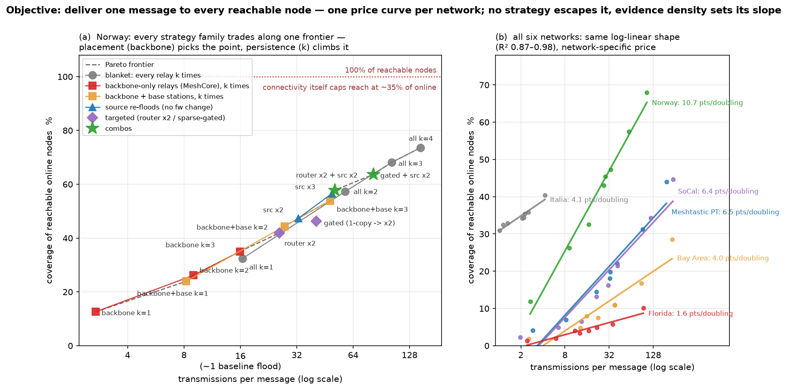
A smooth curve offers no natural breakpoints, so any operational split into “message
classes” is a policy quantization — but three empirical facts pin where a small set
of classes should sit. First, temporal repetition rides the same curve: the union
coverage of m successive baseline floods from the same source grows 13.5% (m=1) → 24%
(m=3) → 39% (m=12) — about six points per doubling of cumulative airtime
(experiment_temporal.py), inside the family band of Figure 16. Periodic
traffic — positions, telemetry, NodeInfo, the bulk of a mesh's load — therefore
already climbs the curve by repeating; granting it per-flood redundancy would pay for the same
coverage twice. Second, one step has distinctly best marginal efficiency (backbone ×2:
nine points for +56% airtime, one firmware predicate). Third, returns diminish steeply past
about two doublings (blanket k≥3 spends 100+ transmissions to stay under 75%) —
beyond that is not a class but an emergency action. Three classes, spaced roughly one
airtime-doubling apart, exhaust the useful range (Table 7); finer splits are not
resolvable against seed noise (±0.5–1 point) and would pretend a precision the
network-specific slope (1.6–10.7 points per doubling) cannot honour. The class labels
generalize across networks; the absolute coverage each buys does not.
| Class | Mechanism | Norway point | Default assignment |
|---|---|---|---|
| BULK | k=1, hop limit 7 | 32% per flood, compounding over repeats | periodic broadcasts: position, telemetry, NodeInfo |
| STANDARD | + backbone relays ×2 | ~41% | one-shot human broadcasts: channel texts |
| ASSURED | + source re-flood (×2) | ~58% | alert-class traffic |
Should classes be pre-assigned per message type, or user-selectable? The economics are asymmetric: the class multiplier is paid by the neighbourhood's airtime, not the sender's, so unconstrained user choice is a commons problem. The defensible middle is defaults by port/type (the Table 7 assignment) plus a rate-limited per-node override — a user may pin, say, a critical telemetry stream one class up, within a budget of above-BULK sends per hour; an exhausted budget degrades the sender back to BULK rather than degrading the mesh. Implementation is small: the class fits in two header bits — and can share the field GradCor already uses, since a packet is either unicast (the bits carry corridor level) or broadcast (they carry the redundancy rung), never both — relays act on it locally (backbone doubles at STANDARD and above) and only the source acts on ASSURED's re-flood.
One bias in the replay deserves its own experiment: the link graph is built from hop≤7
traceroutes and all floods obey the wire's hop field, so gradient descent beyond seven hops
is never exercised on real data — the no-hop-limit property of §3 is proven at
the spec level, not stress-tested. We therefore built synthetic “braid” topologies
with three controlled parameters: d, the depth — the true hop distance from
source to destination, which the construction fixes exactly (the source sits in column 0, the
destination in column d, and a packet must cross every column); w, the number of
parallel lanes per column (the receiver diversity anycast feeds on); and p, one
per-transmission delivery probability on every link. Full links connect consecutive columns,
every node is always on, so depth is isolated from churn. We then measured GradCor-R at depths
the replay never sees
(experiment_depth.py; Figure 17).
The walk is not the thing that breaks at depth. With warm gradients on a two-lane braid at p = 0.7, delivery is 100% at 7 hops, 99% at 100 and 97% at 200 hops, with cost staying linear at roughly 1.4 transmissions per hop — per-hop anycast persistence (up to five broadcasts across parallel candidates) makes each hop nearly certain, so depth only multiplies cost, not risk. Carrying the same packets by unlimited-hop flood instead decays geometrically — 74% → 43% → 3% → 0% over the same depths — because a flood front gets one trial per link and must survive every stage. The honest failure regime is equally visible: a single chain (w=1) of weak links (p=0.5) collapses at depth (77% → 0%); anycast diversity is the load-bearing ingredient, and GradCor needs some receiver redundancy per hop — which any real mesh dense enough to span 20 hops provides.
Cold start at depth exposes a wall, and it is not GradCor's. With no prior state, the first packet falls back to a discovery flood — and today's 3-bit wire hop field caps that flood at 7, so a fresh 20-hop conversation delivers zero, for every protocol, ours included. Grant the fallback flood unlimited depth and the ramp is quick: at depth d=20 the first packet delivers 47% and packets 4 onward ~95–99% as each success re-stamps true distances; at d=50, 20% ramps to 80% by the tenth packet. The practical reading for deep meshes: the corridor removes the per-packet hop ceiling today, within the existing packet format; extending discovery beyond 7 needs a header change that any 20-hop ambition requires regardless of routing scheme. Caveats: the braid is synthetic and fully awake — it isolates depth, deliberately excluding the churn and asymmetry the Norway replay covers.
And broadcast itself can be fixed the same way the corridor was. The corridor survives
depth because of per-hop persistence, and that mechanism transplants directly into the flood:
let a relay retransmit (up to R times) until it overhears an onward arrival — the
same implicit-ack primitive as the contention race of §3.3 and the managed flood's
overhear-cancellation, with the policy inverted: repeat-until-heard instead of mute-when-heard.
Measured on the same braids (experiment_persist.py; Table 8): today's flood
(R=1) delivers 7.7% of packets to the 200-hop far end at p=0.7; R=3 delivers 100%, at
~2.5 transmissions per relay — geometric decay converted to a linear cost factor, exactly
as in the unicast walk, and even weak links reach 99.7% at R=5. Depth is therefore solved
in mechanism for broadcast too; what remains unsolved is arithmetic: one packet
crossing 200 hops costs ~500 transmissions mesh-wide, fine for a rare alert, catastrophic for
periodic telemetry from every node in a mesh large enough to have such a diameter (O(N)
transmissions per beacon, N beaconing nodes). No forwarding mechanism fixes that; only scoping
does — aggregation at region boundaries, interest-based forwarding toward subscribers
(which quietly turns the traffic back into unicast, where the corridor already operates), or
accepting that beacons are a neighbourhood fact and long-haul telemetry travels to named
collectors. Large networks never flood measurements; they aggregate — this is why.
| Depth | Link p | R=1 (today's flood) | R=3 | R=5 | Tx/packet at R=3 |
|---|---|---|---|---|---|
| 20 hops | 0.7 | 74.3% | 99.3% | 100% | 55 |
| 50 hops | 0.7 | 53.0% | 100% | 100% | 127 |
| 200 hops | 0.7 | 7.7% | 100% | 100% | 487 |
| 200 hops | 0.5 | 0.0% | 88.0% | 99.7% | 572 |
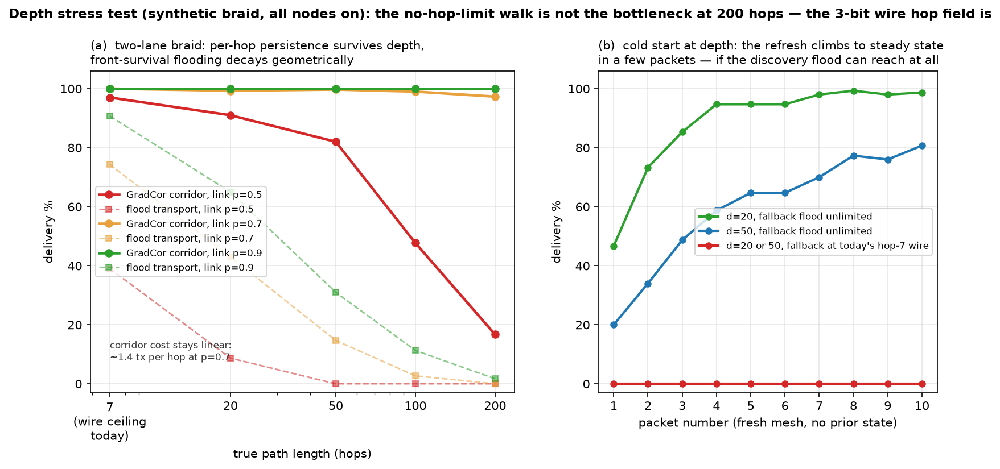
Sections 6.3–6.6 leave the flood with a structural tension: the right relay policy is regime-dependent — sparse meshes reward persistence (§6.6), dense neighbourhoods reward suppression (§8, item 4), and a few well-placed nodes carry outsized value (the backbone rungs of Table 6) — yet the mechanism that assigns policy today is a hand-configured role enum, the last piece of human-guessed structure in the system. Physical placement is the constant no protocol can change; everything above it should calibrate itself. We tested whether it can, with the same move GradCor applied to unicast: replace configured structure with evidence the radio already provides. Each node maintains two numbers, both free of control traffic: crowding c, an EWMA of how many duplicate copies of each packet it decodes (“how covered is my neighbourhood without me?”), and novelty, an EWMA of whether its own relays still produce first-copy receivers (“does my transmission create coverage that would not otherwise exist?”). Its relay pressure is the maximum of the two terms, and pressure alone sets the policy ladder: contention slot (high pressure transmits first), cancellation threshold (low pressure mutes on the first overheard relay, high pressure never mutes) and echo-persistence (§6.6's R, from 1 to 3). A node in a crowd fades toward silence unless its transmissions keep reaching someone new — which is precisely the definition of a bridge.
The test is falsifiable and three-legged (experiment_pressure.py; Figure 18,
Table 9): one config-free rule must match the best static policy in every regime,
where each regime's best static differs. It does. On a dense world (three 20-node cliques
joined by two single bridges — the regime where suppression wins) pressure reaches 93%
of the best coverage at a quarter of its airtime, Pareto-dominating the plain flood on
both axes, and the twelve nodes that self-promote to high pressure include all four bridge
endpoints — discovered by passive listening, with no role ever assigned. On the sparse
braid (the regime where persistence wins) it matches blanket persistence, 97.7% vs 96.3% at
equal cost. On the Norway replay it matches the best static policy (54.1% vs 53.9%) —
21 points above today's flood — with every node allowed to relay and no CLIENT_MUTE
configuration consulted. The mechanism also failed informatively along the way: crowding alone
suppresses the bridges together with the crowd (dense coverage collapses to 34%), and an
active variant that probed by occasionally staying silent learned too slowly; the signal that
works is passive outbound novelty. Caveats mirror the section's others: the simulator observes
first-copy receptions directly, while firmware must infer novelty from onward relays and acks
— under-crediting nodes that serve silent leaves is the design problem to solve in a
port — and the dense world's slotted contention model is still gentler than a truly
congested channel, which is the regime where suppression's value should grow further.
| World (regime) | Best static policy | Best static | Pressure (no config) |
|---|---|---|---|
| Dense: cliques + bridges (suppression) | blanket persist R=3 | 90.4% @ 80.0 tx | 83.7% @ 18.4 tx |
| Braid d=50 (persistence) | blanket persist R=3 | 96.3% @ 134.0 tx | 97.7% @ 133.2 tx |
| Norway replay (mixed) | blanket persist R=3 | 53.9% @ 59.0 tx | 54.1% @ 58.3 tx |
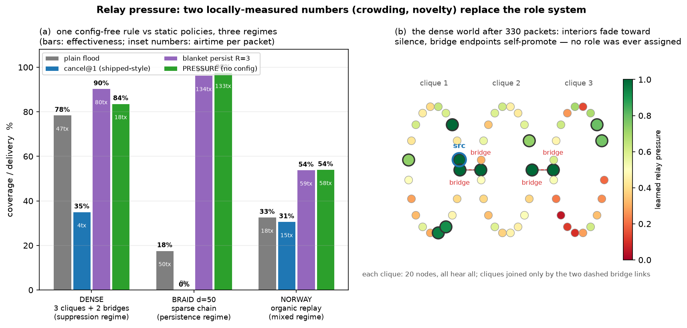
Running the same head-to-head on all six production networks
(experiment_pressure_multinet.py; Figure 19) adds the cross-network check:
pressure matches the best static policy on every network — which is persistence on all
six, since every evidence-sparse organic mesh is a persistence regime — while spending
less airtime wherever local redundancy exists (Florida −19%, Italia −32%). The six
real networks therefore validate the rule's safety, not its full range: none of them is dense
enough to exercise the suppression side, which is exactly the urban regime Figure 18's
synthetic dense world covers and the regime a firmware trial in a city core would test
first. A persistence-only-off variant sharpens the boundary: with muting as the only lever,
pressure reproduces plain flood's coverage and airtime almost exactly on all six networks
(Norway 32.8% at 18.3 tx vs 32.8% at 18.5) — sparse floods are already
near-efficient, because suppression can only harvest redundancy and sparse meshes have almost
none. The airtime dividend lives in density, where pressure collects it automatically.
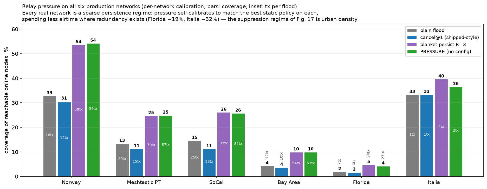
Two governors bound the rule in deployment. First, pressure composes with the message classes of §6.5: pressure decides who relays and with what priority, the class caps how much persistence a packet may buy (BULK at R=1 — periodic traffic is already self-redundant, §6.5 — STANDARD at 2, ASSURED at 3), so the multi-fold airtime of full persistence is spent only on traffic that warrants it. Second, an airtime governor makes “best effort without breach” self-calibrating rather than configured: the two required signals — the node's own duty-cycle spend and observed channel utilization — are already measured by the firmware for regulatory accounting, and effective persistence is simply Reff = min(Rpressure, Rclass, Rbudget), where Rbudget derates toward 1 as either signal approaches its ceiling. The hard budget guarantees regulatory compliance; the surplus, where it exists, is spent exactly where pressure says it buys coverage. No user knob is required — and none should be offered, since the airtime being spent is the neighbourhood's, not the sender's (§6.5). Figure 20 compresses the whole trade into one view: the direction the pressure rule moves each world's operating point reveals its regime.
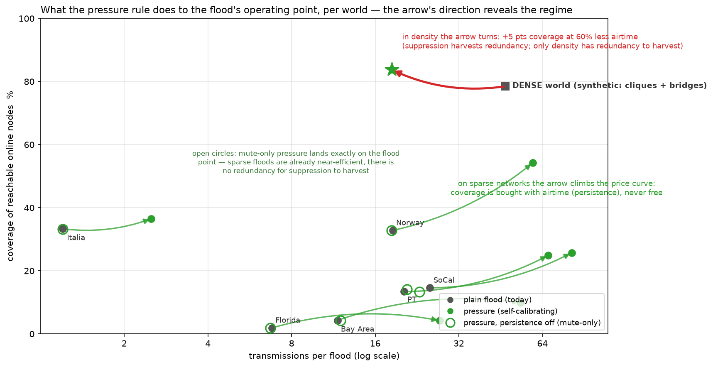
The real topology strengthens the synthetic result. On the synthetic mesh GradCor matched flood's delivery at 2.5–3× less airtime; on the real Norwegian mesh — sparser and harsher than the naive extraction suggested — GradCor-R doubles flood's delivery while keeping the airtime ratio. The mechanism is visible in the graph structure: the ROUTER backbone (degree 53–107 hubs) is present nearly 24/7, so gradients through it stay valid for many hours, while anycast forwarding exploits the receiver diversity that broadcast gives for free — any of several hub-adjacent nodes can carry the packet downhill, so no single lossy link is load-bearing. Notably, the corrected (sparser) graph widened the margin: when links are scarce and marginal, spending them precisely matters more. And the head-to-head confirms the evolution claim in vivo: the clock-free final spec runs even with — here slightly ahead of — the age-widened original (50.7% vs 48.6% at equal cost), with two fewer constants and half the state.
Source routing fails for a measurable, structural reason. PATH needs every hop of a recorded path to work in the named direction and needs the reverse path to deliver the route reply. With 43% of links lacking any working reverse and median 3–4 hop paths, the probability that a full source route remains valid is small and each failure triggers a discovery flood plus a reply that often dies on an asymmetric link. Its 473 tx per delivered packet is worse than never routing at all. This is the algorithm stripped of MeshCore's real-world advantage — deployments built around fixed elevated repeaters with engineered symmetric links — so it should be read as “source routing on an organic mesh,” not as a verdict on MeshCore in its intended setting.
Next-hop caching under-delivers under duty-cycle churn. NEXTHOP edges out flooding (30.4% vs 25.3% at slightly lower cost) but captures little of GradCor's gain: with the median node online 13% of the time, per-destination caches go stale between conversations and most packets fall back to the teaching flood anyway. Its one virtue — zero control traffic and trivial state — remains, which is presumably why Meshtastic 2.6 shipped it.
Production findings. Building the replay surfaced two extraction defects in the
production topology builder, one of them substantial. First, it parsed traceroute
responses as requests, misorienting their edges and inventing endpoint hops from
mid-flight rows: the corrected extraction shrinks the Norway graph from 3,613 to 1,423 directed
links and raises measured reciprocity from 36% to 57% — meaning the old graph both
overstated connectivity and overstated asymmetry, distorting any coverage, bridge, or
role-recommendation rule computed on it. Second, it discarded route_back/
snr_back, which contribute ~21% of real links and the only direct per-link
bidirectionality evidence — the single most decision-relevant link property for any
routing improvement. Both defects were fixed and shipped to production during this work;
because topology windows are ephemeral and rebuilt from raw rows, every subsequent build
self-heals with no data migration.
experiment_cancellation.py): cancellation saves
flood 15% of transmissions but also costs it 2.0 points of delivery (25.3 →
23.3%) — cancelled rebroadcasts are sometimes the only path to edge nodes, the coverage
hole ROUTER_LATE exists to patch. Net effect on the headline: GradCor-R's delivery advantage
widens slightly (2.0× → 2.1×) and its airtime-per-delivered
advantage compresses modestly (3.3× → 3.0×). No conclusion
changes. The headline tables deliberately keep the baseline flood: the link model was
calibrated so baseline floods reproduce real traceroute statistics and those real floods
already ran with cancellation — its aggregate effect is partially absorbed into
the fitted link probabilities, so layering explicit cancellation on top without recalibrating
would double-count the suppression. This run is therefore a bias bound, not a better
model.experiment_plant.py, 10 seeds): gradient seeding by the
destination's ordinary periodic broadcasts (3-hourly / 6-hourly while online, NodeInfo-style)
and, for a source still without a gradient, falling back to managed-flooding the data packet
itself — today's Meshtastic behaviour — whose delivery lets the §3.5 refresh
plant the path. The result runs against the bias one would fear: the fully
oracle-free form (no seeding at all, fallback + refresh only) delivers 55.0% at
23.0 tx per delivered packet vs the shortcut's 49.3% at 22.2 in the same harness
(FLOOD: 25.1% at 71.1) — the fallback flood delivers some cold packets itself, which
the on-demand plant never does. Broadcast seeding lands in between (51.7–52.2%,
23.7–24.1 tx/dlv packet-charged; 26.7–29.9 if the seeding floods —
traffic the mesh sends anyway — are fully charged to GradCor). The headline tables keep
the shortcut, which this run shows to be the conservative choice for delivery; no
conclusion changes.On a real 499-node national mesh with empirically calibrated links and real duty-cycle churn, gradient-corridor anycast in its final clock-free form delivered twice the unicast packets of managed flooding at 40% less per-packet airtime and 3.3× less airtime per delivered packet, while source routing was structurally non-viable and next-hop caching was only marginally better than flooding. The ordering matches the synthetic study's prediction; the corrected, sparser real topology widened the margin. And the ordering is not Norway's: four of the five further production networks, independently calibrated, reproduce it — the fifth, too evidence-starved to plant gradients on, degrades gracefully to flood level rather than failing, defining a measurable eligibility criterion (usable links per node) for deployment. The same replay also simplified the design itself: the clock ablation (§3.6) showed the wall-clock thresholds the method started with are redundant and the head-to-head (Table 3) confirms it — the specification the paper ends with, GradCor-R (Algorithm 2), matches the original with one byte of state per active destination and one deterministic escalation ladder: no state clocks, no tuning constants beyond retry counts and the millisecond contention window it inherits unchanged from the existing managed flood and no statistical estimation anywhere in the forwarding path. What began as “two numbers and two thresholds” ends as “one number and one rule.”
Recommended next steps, in order of information value:
request_id gap (extract it at ingest, optionally
redecode historical rows): this upgrades the response classification of §5.1 from a
98.7%-accurate heuristic to canonical labels. The extraction fix itself (response orientation,
arrival-gated endpoints, route_back ingestion) already shipped to production
during this work.RadioInterface::getTxDelayMsecWeighted, re-keyed on
gradient); the experiment to run is suppression reliability: how often does the losing
candidate fail to hear the winner and forward a duplicate?This work was produced with substantial AI assistance (Cursor agents). The AI wrote the simulation and experiment code, ran the data extraction and analysis, generated the figures and drafted the text. The author directed the research questions, supplied the production data access, reviewed intermediate results, challenged and corrected the methodology at several points (including the link-extraction fix of §5.1 and the decision to ablate the state clocks) and takes full responsibility for the final content. All numbers are reproducible from the published code and data exports [5] independent of any AI involvement.
sim_norway.py,
experiment_asymmetry.py, experiment_widening.py,
experiment_multinet.py, experiment_cancellation.py,
experiment_plant.py, experiment_target99.py,
experiment_custody.py, experiment_hoplimit_multinet.py,
experiment_broadcast.py, experiment_alltoall.py,
experiment_alltoall_multinet.py, experiment_temporal.py,
experiment_depth.py, experiment_persist.py,
experiment_pressure.py, experiment_pressure_multinet.py,
fig_*.py; cross-network exports under
data_networks/) is published alongside this paper.